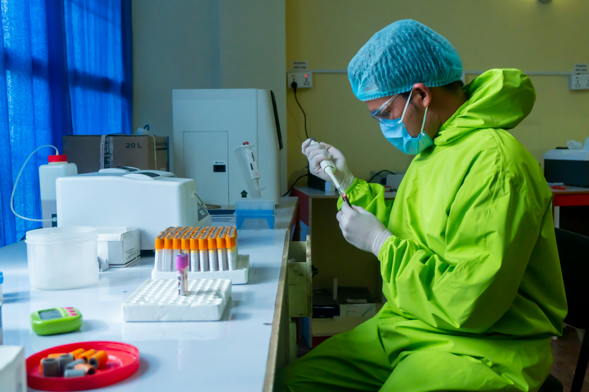

Company Overview
NTLR – Nichrome Testing Laboratory & Research Pvt. Ltd. was established in 2014. Our scope of activities includes analytical testing services and engineering consultancy across multiple sectors.
With state-of-the-art infrastructure, latest technologies, sophisticated instruments, and a strong quality management system, we provide accurate results and solutions within stipulated timeframes to all our customers.
9+
Years Experience
50+
Industry Sectors
100+
Satisfied Clients
